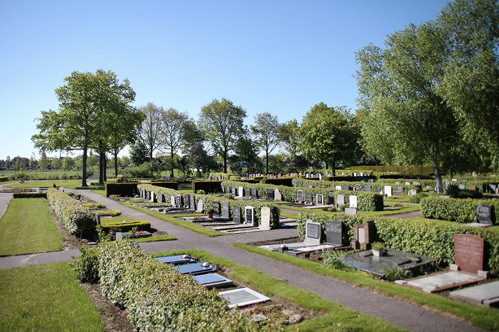

Onze rustplaats
Een serene plek voor de laatste rustplaats van uw dierbare

Onze rustplaats
Een serene plek van herinnering

Serene omgeving
Respectvolle laatste rustplaats
Kenmerken van onze begraafplaats
Goed onderhouden paden
Alle paden zijn recent opgeknapt en goed begaanbaar voor bezoekers
Natuurlijke omgeving
Nieuwe beplanting en haagjes zorgen voor een serene, natuurlijke uitstraling
Uitgebreid terrein
Het terrein is uitgebreid met nieuwe secties en goed gestructureerd
Recente verbeteringen
- Paden die slecht begaanbaar waren zijn opgeknapt
- Nieuwe paden aangelegd ten behoeve van uitbreiding
- Verouderde hoge bomen rondom de begraafplaats zijn veilig weggehaald
- Nieuwe beplanting rondom de begraafplaats aangebracht
- Haagjes langs de paden voor een verzorgd aanzien
Meer informatie
Download het informatiedocument over de uitbreiding van onze begraafplaats
Download PDFVragen over onze begraafplaats?
Neem contact op voor meer informatie over onze rustplaats.